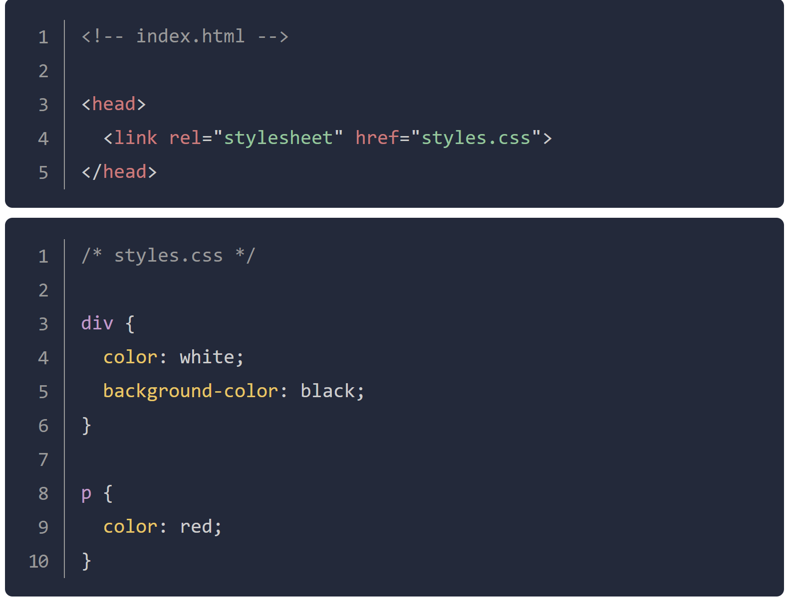
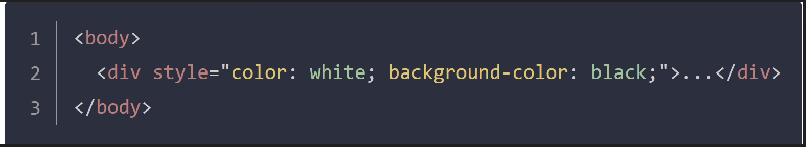

The Syntax of each declaration is as such:property:value pair.

Selectors simply refer to the HTML element to which CSS rules apply, they are what is being "selected" for the rule. There are many different kinds of selectors, the following is no the whole list:
This selector will select elements of any type. Here is an example:
*{color:purple;}
This is applied to all elements of the selected type, such as
div { color: purple; }
The major difference between classes and IDs is that an element can only have one ID, an ID cannot be repeated on a single page, but class does not have to be unique and can be repeated.
This is used for nested classes.
Refer to this PAGE WHEN USING CSS or GOOGLE
The playground of trying out different properties
We can change the font, font size, bold (font weight). Lastly, we can put this line in the center
Or to the right
Let's play with some images and more:
CSS can sometimes seem non-conform with the order, that can be because of the default styles of the browser - the concept of cascade.
The cascade is what determines which rules actually get applied to HTML. It also follows some rules:
ID selector > class selector > type selector
and when the selectors are the same, the tie-breaker is the number. The ones with more amount wins the priority.
Typography based properties (color, font-size, font-family, etc) are usually inherited, while most other properties are not. But, as usual, we can override the Inheritance by directly target at it.
The tie-breaker of the tie-breaker is the order: last defined is the winner.
There are 3 ways of doing it: External CSS, Internal CSS , and Inline CSS.
rel attribute is required, and it specifies the relationship between the HTML file and the linked file.
Pay careful attention as inline CSS will override the other two methods.